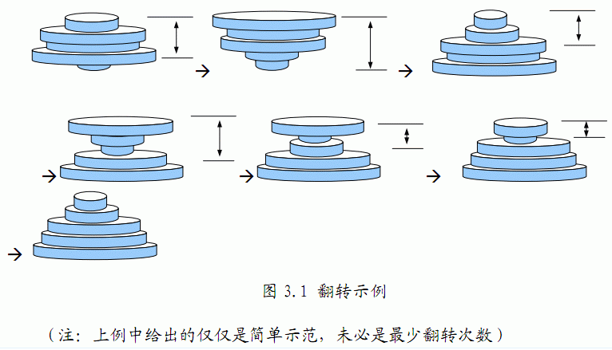

在训练中，一些臂力训练器材是少不了的，小龙在练习的时候发现举重器械上的铁盘放置的非常混乱，并没有按照从轻到重的顺序摆放，这样非常不利于循序渐进的锻炼。他打算利用一个非常省力气的办法来整理这些铁盘，即每次都拿起最上面的若干个圆盘并利用器械的力量上下翻转，这样翻转若干次以后，铁盘将会按照从小到大的顺序排列好。那么你能不能帮小龙确定，最少翻转几次就可以使铁盘按从小到大排序呢？
例如：下面的铁盘经过如图2.1所示的以下几个步骤的翻转后变为从小到大排列。

共两行，第一行为铁盘个数 $N$（$1≤N≤50$）。
第二行为 $N$ 个不同的正整数（中间用空格分开），分别为从上到下的铁盘的半径 $R$（$1≤R≤100$）。
一个正整数，表示使铁盘按从小到大有序需要的最少翻转次数。
5 2 4 3 5 1
5
 Comet OJ
Comet OJ